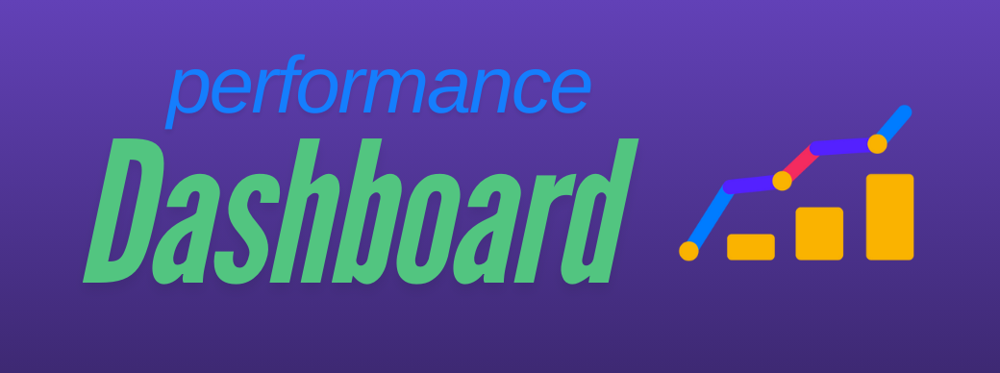

Performance Dashboard for Plant Co.

This project focuses on analyzing and visualizing key financial metrics for Plant Co. highlighting the company’s gross profit performance over time. The interactive dashboard was built to provide insights into revenue trends, cost management, and profit margins, enabling stakeholders to make data-driven decisions. The analysis includes a breakdown of sales categories, identification of high-performing products, and comprehensive financial reporting.
The dashboard leverages advanced data visualization techniques in Power BI, making complex financial data accessible and actionable. With filters for time periods and product segments, stakeholders can quickly explore key performance indicators and gain valuable insights into profit-driving factors. This project underscores the importance of strategic financial analysis in optimizing business operations and enhancing profitability.